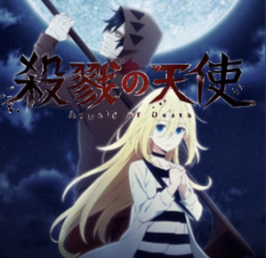
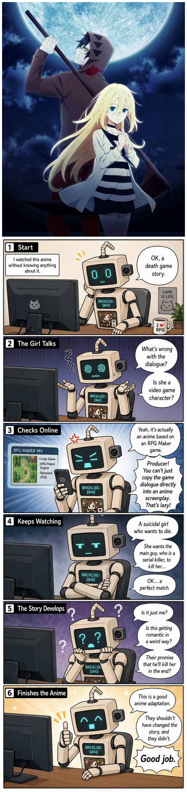

Anime review · Long-form comic
Angels of Death


Text review
I watched this anime without knowing anything about it.
Start
OK, a death game story.
The Girl Talks
What's wrong with the dialogue?
Is she a video game character?
Checks Online
Yeah, it's actually an anime based on an RPG Maker game.
Producer! You can't just copy the game dialogue directly into an anime screenplay.
That's lazy!
Keeps Watching
A suicidal girl who wants to die.
She wants the main guy, who is a serial killer, to kill her...
OK... a perfect match.
The Story Develops
Is it just me?
Is this getting romantic in a weird way?
Their promise that he'll kill her in the end?
Finishes the Anime
This is a good anime adaptation.
They shouldn't have changed the story, and they didn't.
Good job.